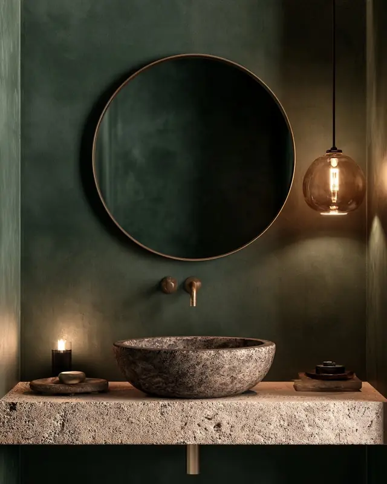

دورة مياه ضيوف صغيرة: من أين نبدأ؟
دورة مياه الضيوف أول مكان يستخدمه الزائر، ومساحتها في أغلب الشقق والفلل صغيرة بين 2 و3 أمتار مربعة. النتيجة تعتمد على ترتيب أربع قطع: المرحاض والمغسلة والمرآة والإضاءة. القاعدة التي نبدأ منها: مسافة أمام المرحاض لا تقل عن 60 سم، ومحور المرحاض بعيد عن الجدار الجانبي بنحو 40 إلى 45 سم.
توزيع مقترح بالمقاسات
- المرحاض المعلّق: يوفّر نحو 15 إلى 20 سم من العمق ويسهّل تنظيف الأرضية، وهو خيار جيد للمساحات الصغيرة مع خزان مخفي داخل الجدار.
- المغسلة: مغسلة ضيقة بعرض 40 إلى 50 سم وعمق لا يزيد عن 30 إلى 35 سم، أو مغسلة ركنية، حتى لا تضيّق الممر.
- الباب: باب يفتح للخارج أو باب سحب يوفّر مساحة الفتح كلها داخل الغرفة.
- التخزين: خزانة مرآة أو رف مفتوح فوق المرحاض بدل خزانة أرضية.
هذه مقاسات إرشادية، وموقع نقاط السباكة وفتحة التهوية يحدّدان التوزيع النهائي، لذلك نطلب مقاسات الدورة وصورها قبل أن نرسم المخطط.
الألوان والخامات المتوفرة محلياً
نقترح للجدران ناتشورال وايت (جوتن 12303) أو سكاي لايت (جوتن 1624) لأنها فاتحة وتعكس الضوء، مع لمسة سايبل ستون (جوتن 10342) في الإكسسوارات أو على جدار المغسلة. الأرضية بسيراميك أو بورسلان مطفي مانع للانزلاق بدرجة فاتحة، والمقابض والحنفيات بلمسة معدنية دافئة. خذ عيّنة من محل الدهان وجرّبها على الجدار في الصباح والمساء، فالألوان تختلف حسب الإضاءة. أكواد أخرى في دليل ألوان البيت السعودي.
الإضاءة والتهوية
إضاءة سقف دافئة قريبة من 3000K مع إنارة جانبية للمرآة بدل ضوء واحد من الأعلى، فهي تُظهر الوجه بشكل أفضل وتعطي إحساساً بالعرض. والتهوية مهمة في الدورات الصغيرة: مروحة شفط أو نافذة، وإلا تتأثر الألوان والخامات بالرطوبة.
أخطاء شائعة في دورات الضيوف الصغيرة
- مغسلة عميقة تأخذ مساحة الممر.
- باب يفتح إلى الداخل ويصطدم بالمرحاض.
- بلاط غامق كبير يجعل الغرفة أضيق.
- إضاءة واحدة في السقف بلا إضاءة للمرآة.
نصمم لك دورتك بمقاساتها الحقيقية ضمن باقة الغرفة: تصميم مقترح بصورة واقعية، ولوحة مواد بموردين في السعودية، ومخطط 2D بالمقاسات، وقائمة مشتريات. اطّلع أيضاً على الباقات أو كيف نشتغل.
كم يستغرق التصميم؟
نسلمك الملف خلال خمسة أيام عمل من استلام المقاسات والصور. المطلوب منك: طول وعرض الدورة، وموقع الباب ونقاط السباكة، وصورة أو اثنتان من زوايا مختلفة.
باقة الغرفة
990 ريال 790 ريال — عرض الافتتاح حتى 30 نوفمبر لأول 20 عميل، تعديلان (والثالث مجاني) وتسليم خلال 5 أيام عمل.
أسئلة شائعة
كم مساحة دورة مياه الضيوف الصغيرة؟
غالباً بين 2 و3 أمتار مربعة، مثل 1.2×2 أو 1.5×2 متر، وتتسع لمرحاض ومغسلة صغيرة وبعض التخزين إذا وُزّعت بمقاسات مدروسة.
هل تناسب الألوان الفاتحة دورة مياه صغيرة؟
نعم، الدرجات الفاتحة الدافئة تعكس الضوء وتوسّع النظر، مع لمسة غامقة واحدة في الإكسسوار أو الإطار حتى لا تبدو الغرفة باردة.
كم تكلفة تصميم دورة مياه ضيوف؟
باقة الغرفة 790 ريال في عرض الافتتاح بدل 990، وتسليمها خلال 5 أيام عمل.
هل تنفذون التصميم؟
لا، نقدم تصميماً فقط، ونسلمك ملفاً جاهزاً لأي مقاول أو سباك أو نجار.